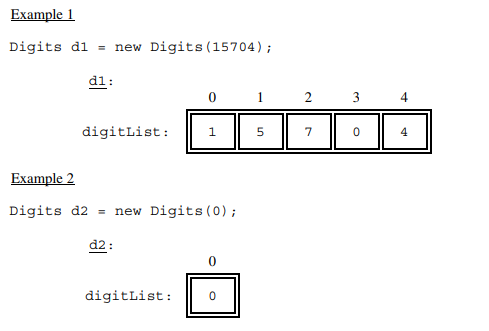
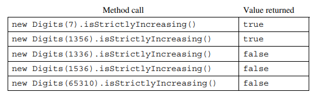
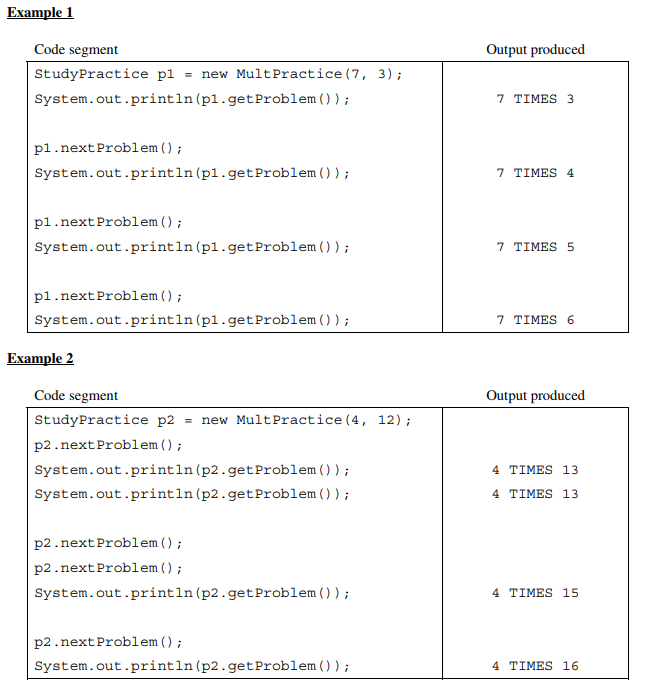
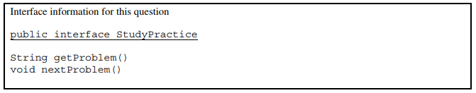
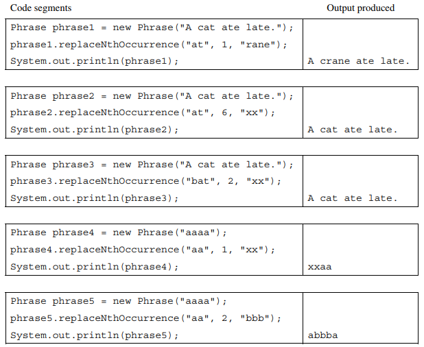
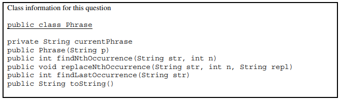
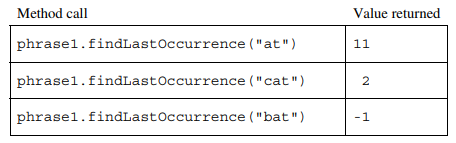
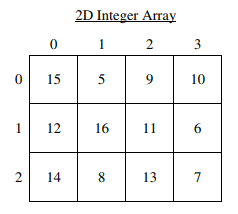
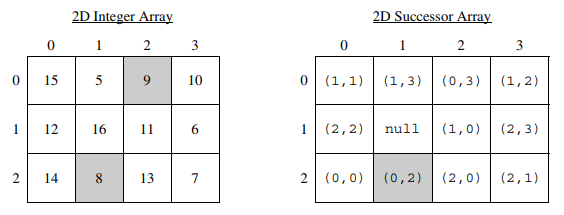
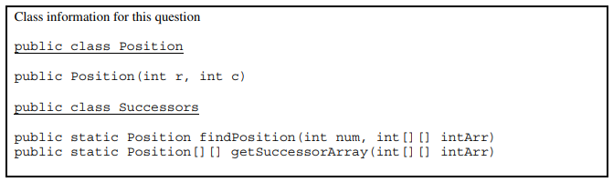

8. AP计算机2017年考试：主观题
I. This question involves identifying and processing the digits of a non-negative integer. The declaration of the Digits class is shown below. You will write the constructor and one method for the Digits class.
public class Digits
{
/** The list of digits from the number used to construct this object.
* The digits appear in the list in the same order in which they appear in the original number.
*/
private ArrayList<Integer> digitList;
/** Constructs a Digits object that represents num.
* Precondition: num >= 0
*/
public Digits(int num)
{ /* to be implemented in part (a) */ }
/** Returns true if the digits in this Digits object are in strictly increasing order;
* false otherwise.
*/
public boolean isStrictlyIncreasing()
{ /* to be implemented in part (b) */ }
}
(a) Write the constructor for the Digits class. The constructor initializes and fills digitList with the digits from the non-negative integer num. The elements in digitList must be Integer objects representing single digits, and appear in the same order as the digits in num. Each of the following examples shows the declaration of a Digits object and the contents of digitList as initialized by the constructor.

Complete the Digits constructor below.
/** Constructs a Digits object that represents num.
* Precondition: num >= 0
*/
public Digits(int num)
(b) Write the Digits method isStrictlyIncreasing. The method returns true if the elements of digitList appear in strictly increasing order; otherwise, it returns false. A list is considered strictly increasing if each element after the first is greater than (but not equal to) the preceding element.
The following table shows the results of several calls to isStrictlyIncreasing.

Complete method isStrictlyIncreasing below.
/** Returns true if the digits in this Digits object are in strictly increasing order;
* false otherwise.
*/
public boolean isStrictlyIncreasing()
II. This question involves the design of a class that will be used to produce practice problems. The following StudyPractice interface represents practice problems that can be used to study some subject.
public interface StudyPractice
{
/** Returns the current practice problem. */
String getProblem();
/** Changes to the next practice problem. */
void nextProblem();
}
The MultPractice class is a StudyPractice that produces multiplication practice problems. A MultPractice object is constructed with two integer values: first integer and initial second integer. The first integer is value that remains constant and is used as the first integer in every practice problem. The initial second integer is used as the starting value for the second integer in the practice problems. This second value is incremented for each additional practice problem that is produced by the class.
For example, a MultPractice object created with the call new MultPractice(7, 3) would be used to create the practice problem "7 TIMES 3", "7 TIMES 4", "7 TIMES 5", and so on.
In the MultPractice class, the getProblem method returns a string in the format of “first integer **TIMES _second integer_“. The nextProblem method updates the state of the MultPractice object to represent the next practice problem.
The following examples illustrate the behavior of the MultPractice class. Each table shows a code segment and the output that would be produced as the code is executed.


Write the complete MultPractice class. Your implementation must be consistent with the specifications and the given examples.
III. This question involves analyzing and modifying a string. The following Phrase class maintains a phrase in an instance variable and has methods that access and make changes to the phrase. You will write two methods of the Phrase class.
public class Phrase
{
private String currentPhrase;
/** Constructs a new Phrase object. */
public Phrase(String p)
{ currentPhrase = p; }
/** Returns the index of the nth occurrence of str in the current phrase;
* returns -1 if the nth occurrence does not exist.
* Precondition: str.length() > 0 and n > 0
* Postcondition: the current phrase is not modified.
*/
public int findNthOccurrence(String str, int n)
{ /* implementation not shown */ }
/** Modifies the current phrase by replacing the nth occurrence of str with repl.
* If the nth occurrence does not exist, the current phrase is unchanged.
* Precondition: str.length() > 0 and n > 0
*/
public void replaceNthOccurrence(String str, int n, String repl)
{ /* to be implemented in part (a) */ }
/** Returns the index of the last occurrence of str in the current phrase;
* returns -1 if str is not found.
* Precondition: str.length() > 0
* Postcondition: the current phrase is not modified.
*/
public int findLastOccurrence(String str)
{ /* to be implemented in part (b) */ }
/** Returns a string containing the current phrase. */
public String toString()
{ return currentPhrase; }
}
(a) Write the Phrase method replaceNthOccurrence, which will replace the nth occurrence of the string str with the string repl. If the nth occurrence does not exist, currentPhrase remains unchanged.
Several examples of the behavior of the method replaceNthOccurrence are shown below.


The Phrase class includes the method findNthOccurrence, which returns the nth occurrence of a given string. You must use findNthOccurrence appropriately to receive full credit.
Complete method replaceNthOccurrence below.
/** Modifies the current phrase by replacing the nth occurrence of str with repl.
* If the nth occurrences does not exist, the current phrase is unchanged.
* Precondition: str.length() > 0 and n > 0
*/
public void replaceNthOccurrence(String str, int n, String repl)
(b) Write the Phrase method findLastOccurrence. This method finds and returns the index of the last occurrence of a given string in currentPhrase. If the given string is not found, -1 is returned. The following tables show several examples of the beheavior of the method findLastOccurrence.
Phrase phrase1 = new Phrase("A cat ate late.");

You must use findNthOccurrence appropriately to receive full credit.
Complete method findLastOccurrence below.
/** Returns the index of the last occurrence of str in the current phrase;
* returns -1 if str is not found.
* Precondition: str.length() > 0
* Postcondition: the current phrase is not modified.
*/
public int findLastOccurrence(String str)
IV. This question involves reasoning about a two-dimensional (2D) array of integers. You will write two static methods, both of which are in a single enclosing class named Successors (not shown). These methods process a 2D integer array that contains consecutive values. Each of these integers may be in any position in the 2D integer array. For example, the following 2D integer array with 3 rows and 4 columns contains the integers 5 through 16, inclusive.

The following Position class is used to represent positions in the integer array. The notation (r, c) will be used to refer a Position object with row r and column c.
public class Position
{
/** Constructs a Position object with row r and column c. */
public Position(int r, int c)
{ /* implementation not shown */ }
// there may be instance variables, constructors, and methods that are not shown.
}
(a) Write a static method findPosition that takes an integer value and a 2D integer array and returns the position of the integer in the given 2D integer array. If the integer is not an element of the 2D integer array, the method returns null.
For example, assume that array arr is the 2D integer array shown at the beginning of the question.
- The call
findPosition(8, arr)would return thePositionobject(2, 1)because the value8appears inarrat row 2 and column 1. - The call
findPosition(17, arr)would returnnullbecause the value17does not appear inarr.
Complete method findPosition below.
/** Returns the position of num in intArr;
* returns null if no such element exists in intArr.
* Precondition: intArr contains at least one row.
*/
public static Position findPosition(int num, int[][] intArr)
(b) Write a static method getSuccessorArray that returns a 2D successor array of positions created from a given 2D integer array.
The successor of an integer value is the integer that is one greater than that value. For example, the successor of 8 is 9. A 2D successor array shows the position of the successor of each element in a given 2D integer array. The 2D successor array has the same dimensions as the given 2D integer array. Each element in the 2D successor array is the position (row, column) of the corresponding 2D integer array element’s successor. The largest element in the 2D integer array does not have a successor in the 2D integer array, so its corresponding position in the 2D successor array is null.
The following diagram shows a 2D integer array and its corresponding 2D successor array. To illustrate the successor relationship, the value 8 and 9 in the 2D integer array are shaded. In the 2D successor array, the shaded element shows that the position of the successor of 8 is (0, 2) in the 2D integer array. The largest value in the 2D integer array is 16, so its corresponding element in the 2D successor array is null.


Assume that findPosition works as specified, regardless of what you wrote in part (a). You must use findPosition appropriately to receive full credit.
Complete method getSuccessorArray below.
/** Returns a 2D successor array as described in part (b) constructed from intArr.
* Precondition: intArr contains at least one row and contains consecutive values.
* Each of these integers may be in any position in the 2D array.
*/
public static Position[][] getSuccessorArray(int[][] intArr)